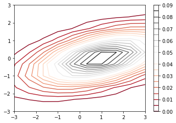
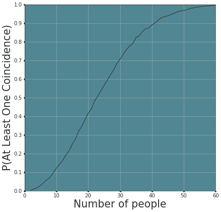

Introduction to Probability for Data Science (Stanley H. Chan)
import os
import random
import string
from functools import cache
import matplotlib.pyplot as plt
import numpy as np
from numba import jit
from numpy.random import default_rng
from typing import *
- Consider one day to code up random generators like Uniform Distribution from scratch:
- https://github.com/neerajkumarvaid/Data-Science-From-Scratch-Python/blob/master/probability.py
- https://towardsdatascience.com/how-to-generate-random-variables-from-scratch-no-library-used-4b71eb3c8dc7
def seed_all(seed: int = 1992) -> None:
"""Seed all random number generators."""
print(f"Using Seed Number {seed}")
os.environ["PYTHONHASHSEED"] = str(seed) # set PYTHONHASHSEED env var at fixed value
np.random.seed(seed) # for numpy pseudo-random generator
random.seed(seed) # set fixed value for python built-in pseudo-random generator
seed_all(1992)
Using Seed Number 1992
Chapter 1
Question 6
def f(x, y):
return np.divide(1, np.multiply(2 * np.sqrt(3), np.pi)) * np.exp(
np.multiply(
np.divide(-1, 6),
(x ** 2 - 2 * x * y - 2 * x + 4 * y ** 2 + 2 * y + 1),
)
)
Create meshgrids such that we enumerate cases of the range \([-3, 3] \times [-3, 3]\) for the values that \(X\) and \(Y\) can take on. Correspondingly, set \(Z = f(X, Y)\) such that we have constant values for the set of values we got from the meshgrid.
As an example:
- When \(X = -3, Y = 3\), we have \(Z = f(X, Y) = 2.8986519194402697e-07\). This is one contour line in the 2d space, but why it looks like a curvature (circle)? This suggests that when keeping \(Z\) to be the constant of \(2.8986519194402697e-07\), there are many different set of \((X, Y)\) that gives this value!
X = np.linspace(-3, 3, 10)
Y = np.linspace(-3, 3, 10)
X, Y = np.meshgrid(X, Y)
Z = f(X, Y)
plt.contour(X, Y, Z, 20, cmap='RdGy')
plt.colorbar();

Question 9
@cache
def calc_vowel_consonant_prob(num_simulations: int, *args, **kwargs) -> float:
"""A collection of 26 English letters, a-z, is mixed in a jar. Two letters are drawn at random,
one after the other without replacement. What is the probability of drawing a vowel (a,e,i,o,u)
and a consonant in either order?
Args:
num_simulations (int): Number of simulations to run.
Returns:
float: The probability of drawing a vowel and a consonant in either order.
"""
count = 0
rng = default_rng()
for sim_num in range(num_simulations):
sample_2_letters_without_replacement = rng.choice(*args, **kwargs)
chosen_letters = np.asarray(all_letters)[sample_2_letters_without_replacement]
if not (
set(chosen_letters).issubset(vowels) or set(chosen_letters).issubset(consonants)
):
count += 1
return count / num_simulations
all_letters = list(string.ascii_lowercase)
vowels = ["a", "e", "i", "o", "u"]
consonants = list(set(all_letters) - set(vowels))
num_simulations = 1000000
calc_vowel_consonant_prob(num_simulations, a=26, size=2, replace=False)
0.323559
sample_2_letters_without_replacement = rng.choice(a = 26, size = 2, replace=False): This is equivalent torandom.sample(range(26), 2)which if we set the parameters correctly, means we will sample index 0 to 25 twice, without replacement. For example, the sampled index is in a form of a array of size 2:[1, 4]which corresponds to the letters[b, e].- Note in particular this sampling is a using a uniform distribution where each letter has \(\frac{1}{26}\) chance of getting selected in the first sample.
chosen_letters = np.asarray(all_letters)[sample_2_letters_without_replacement]: This is just subsetting the index from theall_letters. Sinceall_lettersis a list which enumerates the alphabets in order, it suffices for us to just subset the array directly to get the chosen letters.if not (set(chosen_letters).issubset(vowels) or set(chosen_letters).issubset(consonant)): count += 1: If ourchosen_lettersis neither a subset of the vowels or the consonant, then this means that it fulfills our condition, (i.e. one consonant and one vowel, we don't care order since the question said either order). If condition fulfilled,countadds 1.- Lastly, calculate the probability by dividing the
countby thenum_simulationsto get the frequency (i.e the probability). Indeed with enough simulations, the probability converges to the theoretical answer of \(0.3230...\).
Question 10: Birthday Paradox
Settings:
- 50 people
- Assume each person has a \(\frac{1}{365}\) probability to be assigned a birthday. In other words, the person's birthday should come from a uniform distribution from 1 to 365.
- So simple modelling just allows us to draw numbers for these 50 people from \([1, 365]\) and whenever the number is same we say they are of the same birthday.
- Want to find probability (frequency) of at least 2 people have same birthday.
- Note that in your code one should also consider any number \(>=2\).
rng = np.random.default_rng()
num_possible_birthdays = 365
num_people = 50
num_simulations = 1000
def containsDuplicate(nums: List[int]) -> bool:
"""Check if a list contains duplicate elements.
Args:
nums (List[int]): List of integers.
Returns:
bool: Boolean value to indicate if the list contains duplicate elements.
"""
dup_dict = {}
for _, num in enumerate(nums):
if num not in dup_dict:
dup_dict[num] = 0
else:
return True
return False
def generate_one_random_birthday(num_possible_birthdays: int = 365) -> int:
"""Generate one random birthday from 1 to num_possible_birthdays.
Samples 1 integer from 1 to 365 from a uniform distribution.
Args:
num_possible_birthdays (int): The number of possible birthdays. Defaults to 365.
Returns:
birthday (int): The random birthday in integer.
"""
# Return random integers from the "discrete uniform" distribution of the specified dtype. If high is None (the default), then results are from 0 to low.
birthday = rng.integers(num_possible_birthdays, size=None) # size=None to return integer instead of array of ints
return birthday
def generate_k_birthdays(
num_people: int, *args, **kwargs
) -> List[int]:
"""Generates all possible birthdays for a given number of people sampled
from a uniform distribution.
Example:
If there are 3 people, the possible birthdays can be understood to be sampled from a uniform distribution
of 1 to 365 inclusive with replacement.
>>> generate_k_birthdays(3, 365)
Args:
num_people (int): The number of people in the group.
num_possible_birthdays (int, optional): Number of possible birthdays. Defaults to 365.
Returns:
birthdays (List[int]): A list of birthdays.
"""
birthdays = [
generate_one_random_birthday(*args, **kwargs)
for _ in range(num_people)
]
return birthdays
def calculate_same_birthday_probability(
num_simulations: int, *args, **kwargs
) -> float:
"""Calculates the probability of the Birthday Paradox Problem.
Args:
num_simulations (int, optional): The number of simulations to run.
Returns:
probability (float): The probability of the Birthday Paradox.
"""
count = 0
for _ in range(num_simulations):
birthdays = generate_k_birthdays(*args, **kwargs)
if containsDuplicate(birthdays):
count += 1
probability = count / num_simulations
return probability
calculate_same_birthday_probability(num_simulations=10000, num_people=50, num_possible_birthdays=365)
0.97
We go through one loop of the simulation to understand the code:
birthdays = default_rng().choice(a=num_possible_birthdays, size=num_people, replace=True): what this does is two folds,- Samples 1 integer from 1 to 365 from a uniform distribution. (i.e. 1 to num_possible_birthdays)
- Repeat the sampling of 1 integer 50 times. (i.e. num_people=50)
- In short, it returns an array of 50 elements, each element is sampled uniformly from 1 to 365 inclusive.
if has_duplicates(birthdays)checks whether the array has duplicates (i.e. akin to checking if 2 or more people has the same birthdays).- If
True,count +=1.
- If
- Finally, the probability is the number of
countdivided by the total number of simulations. It should converge to around \(0.97\). - One should realize by now probability in most parts, is just the frequency of "occurring" over the total number of "events".
def calculate_same_birthday_probability_rng_choice(
num_simulations: int,
num_people: int = 50,
num_possible_birthdays: int = 365,
replace: bool = True,
) -> float:
"""Calculates the probability of the Birthday Paradox Problem.
Args:
num_simulations (int, optional): The number of simulations to run.
num_people (int, optional): The number of people in the simulation.
num_possible_birthdays (int, optional): The number of possible birthdays.
replace (bool, optional): Whether or not to sample with replacement.
Returns:
probability (float): The probability of the Birthday Paradox.
"""
count = 0
for _ in range(num_simulations):
birthdays = default_rng().choice(
a=num_possible_birthdays, size=num_people, replace=True
)
if containsDuplicate(birthdays):
count += 1
probability = count / num_simulations
return probability
calculate_same_birthday_probability_rng_choice(num_simulations=10000, num_people=50, num_possible_birthdays=365, replace=True)
0.9714
The below code is not mine and is taken from here. For my reference to see if I coded correctly.
from random import randint
import matplotlib.pyplot as plt
import seaborn as sns
MIN_NUM_PEOPLE = 2
MAX_NUM_PEOPLE = 60
NUM_POSSIBLE_BIRTHDAYS = 365
NUM_TRIALS = 10000
def generate_random_birthday():
birthday = randint(1, NUM_POSSIBLE_BIRTHDAYS)
return birthday
def generate_k_birthdays(k):
birthdays = [generate_random_birthday() for _ in range(k)]
return birthdays
def aloc(birthdays):
unique_birthdays = set(birthdays)
num_birthdays = len(birthdays)
num_unique_birthdays = len(unique_birthdays)
has_coincidence = (num_birthdays != num_unique_birthdays)
return has_coincidence
def estimate_p_aloc(k):
num_aloc = 0
for _ in range(NUM_TRIALS):
birthdays = generate_k_birthdays(k)
has_coincidence = aloc(birthdays)
if has_coincidence:
num_aloc += 1
p_aloc = num_aloc / NUM_TRIALS
return p_aloc
def estimate_p_aloc_for_range(ks):
k_probabilities = []
for k in ks:
p_aloc = estimate_p_aloc(k)
k_probabilities.append(p_aloc)
return k_probabilities
ks = range(MIN_NUM_PEOPLE, MAX_NUM_PEOPLE + 1)
k_probabilities = estimate_p_aloc_for_range(ks)
fig, ax = plt.subplots(figsize=(10, 10), dpi=49)
ax.set_facecolor('#518792')
ax.xaxis.set_tick_params(width=5, color='#2d3233')
ax.yaxis.set_tick_params(width=5, color='#2d3233')
sns.lineplot(x=ks, y=k_probabilities, color='#2d3233')
plt.xticks(fontsize=15, color='#2d3233')
y_range = [0, 0.1, 0.2, 0.3, 0.4, 0.5, 0.6, 0.7, 0.8, 0.9, 1]
plt.yticks(y_range, fontsize=15, color='#2d3233')
plt.grid()
plt.xlim([0, 60])
plt.ylim([0, 1])
plt.xlabel('Number of people', fontsize=30, color='#2d3233')
plt.ylabel('P(At Least One Coincidence)', fontsize=30, color='#2d3233')
plt.show()
